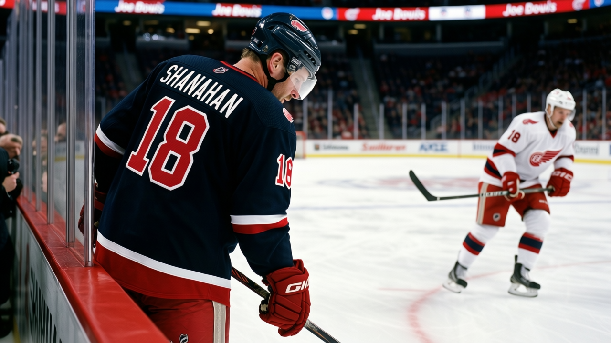

The Rebuild Math in Detroit: $80.89M, No First, No Yzerman
The league's second-highest payroll has no first-round pick, no captain, and a $2.25M cost per point. The new face in the room has three years left and says he does not know if it is the last stop.
 E.J. "Ears" CallahanInsider · The Hot Stove
E.J. "Ears" CallahanInsider · The Hot Stove

Shanahan's future in Detroit

 Detroit Red Wings is 13-10-4. They are on a 3-game win streak. They are also the league's most expensive team per point, at $2.25M, with a payroll of $80.89M that sits second only to
Detroit Red Wings is 13-10-4. They are on a 3-game win streak. They are also the league's most expensive team per point, at $2.25M, with a payroll of $80.89M that sits second only to  New York Rangers.
New York Rangers.
The captain is out.  Steve Yzerman85 has a shoulder, out since before December 1, return date January 25.
Steve Yzerman85 has a shoulder, out since before December 1, return date January 25.  Derian Hatcher85 has a foot, out since the first week of December, back December 27. Two of their top defenders are on the shelf at the same time, in the same month, for the same season that does not have a first-round pick.
Derian Hatcher85 has a foot, out since the first week of December, back December 27. Two of their top defenders are on the shelf at the same time, in the same month, for the same season that does not have a first-round pick.
Because the first is already in Toronto. The Bureau's draft capital table shows  Toronto Maple Leafs holding a Round 1 pick that was originally Detroit's. The league's best team, 50 points, reigning champions, is holding the rebuild currency of the league's second-most expensive payroll. That is the shape of the move, and it is the shape of the season.
Toronto Maple Leafs holding a Round 1 pick that was originally Detroit's. The league's best team, 50 points, reigning champions, is holding the rebuild currency of the league's second-most expensive payroll. That is the shape of the move, and it is the shape of the season.
What Shanahan Saw
Brendan Shanahan walked into the room last week. He told The Tunnel's Marcus Bell: "I walked in here and the first thing I noticed was the ice at practice felt, I don't know, slower. Not because the guys can't skate, because they can. But there's a, you know, a patience to it. Nobody's burning themselves out in the first ten minutes. Took me three days to figure that out."
He also said: "I got three years left on the deal. I don't know if it's the last stop."
The room is eleven guys over 33, by Yzerman's own count. The W3, the 36 points, the $2.25M per point: three numbers pointing in the same direction, and one pointing at the ledger.
The Payroll Problem
$80.89M. The second-highest in the league. The team with the highest, New York Rangers, is 44 points at a cost of $1.76M per point. Detroit is 36 points at $2.25M. The gap between payroll and product is $44M of spend for 8 fewer points, and no amount of January winning closes it.
Yzerman is out until January 25. That is roughly the next 15 games. Hatcher is back in 10 days. The roster is not the roster it was in October, and the pick that would have been the lever is in a different building, in a different conference, on a team already 50 points deep.
The rebuild subtracts. It took the pick to Toronto. It is taking the captain to a return date in January. It is taking the money out of the room. What is left is 13-10-4 and a 3-game win streak and a center who says he is jealous of the comfort of a guy who has been in the same room for 21 years.
The flame is on what Shanahan did not answer: three years, or one?